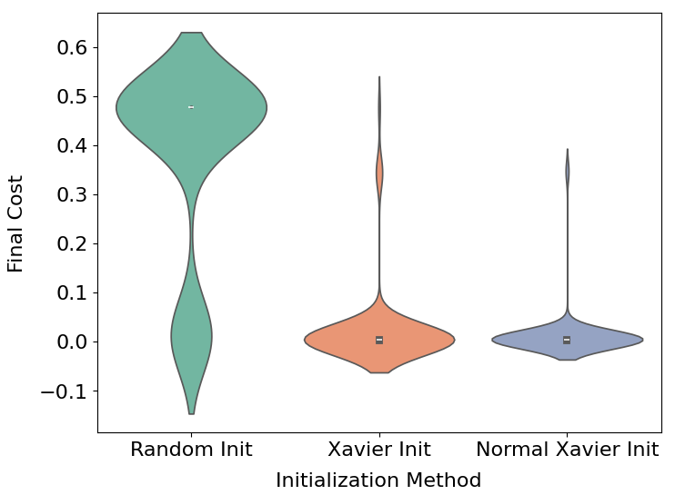
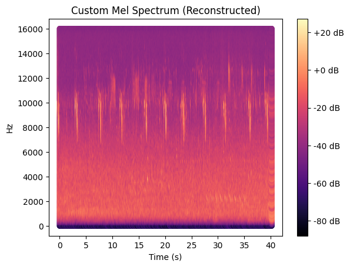
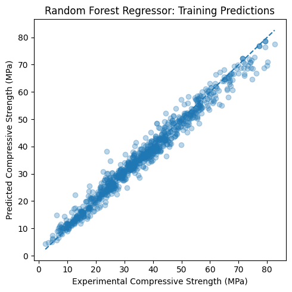

About me
I am an AI/ML Engineer and Researcher with an MSc graduate from Stellenbosch University / the African Institute for Mathematical Sciences (AIMS), supported by a Google DeepMind Scholarship. My MSc research focused on building a diffusion-based self-supervised foundation model for mass spectrometry, combining masked spectrum prediction with transformer architectures to learn robust latent representations from large-scale unlabelled scientific data. I started my academic journey in Civil Engineering and later transitioned into mathematics, machine learning, and AI for Science. I enjoy working at the intersection of theory and practice, and building systems that solve real problems with a strong passion for sustainability.
I am interested in machine learning research and engineering, with particular focus on generative models, representation learning, computer vision, AI for Science, and AI Safety. I also have a strong interest in applying AI to scientific and engineering problems.
Interests
- Machine Learning
- Generative Modelling
- Computer Vision
- Representation Learning
- AI for Science
- AI Safety
Education
-
MSc Mathematical Sciences With Specialization in AI for Science, 2026
Stellenbosch University / AIMS South Africa
DistinctionMachine Learning Deep Learning Optimization Probability Theory Linear Algebra Scientific Computing -
BSc Civil Engineering, 2020
Makerere University · Uganda
First Class HonoursEngineering Mathematics Calculus Linear Algebra Statistics Computational Modelling
Recent News
-
Present
Currently preparing MSc thesis for publication, and looking for PhD and opportunities in machine learning, AI for Science and data science.
-
Jul 2026
Completed MSc Mathematical Sciences (AI for Science) at Stellenbosch University / AIMS with Distinction.
-
2026
MSc thesis: Diffusion-based Self-Supervised Foundation Model for Mass Spectrometry-developed masked spectrum prediction with transformer architectures for representation learning on scientific spectral data.
-
2025
Participated in SemEval 2026 Task 9-multilingual text classification for political polarization detection in English and low-resource Hausa using BERT, mDeBERTa, and AfroXLMR.
-
2025
Awarded the Google DeepMind Scholarship for academic excellence in Artificial Intelligence for Science.
Experience
MSc Research - Diffusion Models for Mass Spectrometry
Stellenbosch University / AIMS South Africa
- Developed a self-supervised diffusion-based foundation model using masked spectrum prediction on large-scale mass spectrometry data.
- Designed and trained transformer architectures in PyTorch for representation learning on scientific spectral data.
- Applied modern generative modelling techniques including diffusion processes and score matching to scientific data.
Software Developer
Clusterbots Technology Ltd, Uganda
- Built ML regression models for concrete strength estimation from engineering material data.
- Designed a web-based construction management ERP using Python and Django.
- Developed AutoCAD plugins (C#) automating structural detailing workflows.
Selected Projects
Diffusion-based Foundation Model for Mass Spectrometry
Developed a self-supervised foundation model for mass spectrometry using masked spectrum prediction. Combined diffusion processes with transformer architectures to learn general purpose latent representations from large-scale unlabelled spectral datasets, implemented in PyTorch with custom diffusion schedules and masked pre-training objectives.
Agentic Report Generator
Multi-agent AI pipeline (5 specialized agents) using Google Gemini, LangChain, and LangGraph. Generates fact-checked, APA-cited technical reports with live web research via a Gradio interface.
Neural Network Initialization from Scratch
Neural networks from first principles (NumPy only) rigorously comparing initialization strategies-Random, Xavier, Normal Xavier-on optimization dynamics and training convergence.

BioAcoustic Mel-Spectrogram Pipeline
Custom bioacoustic signal processing pipeline from raw audio: Hanning windowing, FFT-based frequency extraction, mel filter bank, and time-frequency visualization-all built from scratch.

Material Strength Prediction
Machine learning regression system predicting concrete compressive strength from material composition and environmental variables. Deployed as part of an industry engineering workflow.

StructCAD: Automated Structural Design
AutoCAD plugin (C#) automating structural detailing workflows using computational geometry. Deployed at an engineering firm in Uganda to eliminate repetitive design tasks.
Honors & Awards
-
Google DeepMind Scholarship:Awarded for excellence in Artificial Intelligence for Science · 2025–2026
-
Undergraduate Scholarship:Awarded for outstanding academic performance · 2016–2020
Contact
Feel free to reach out if you are interested in collaboration, research discussion, or academic opportunities.